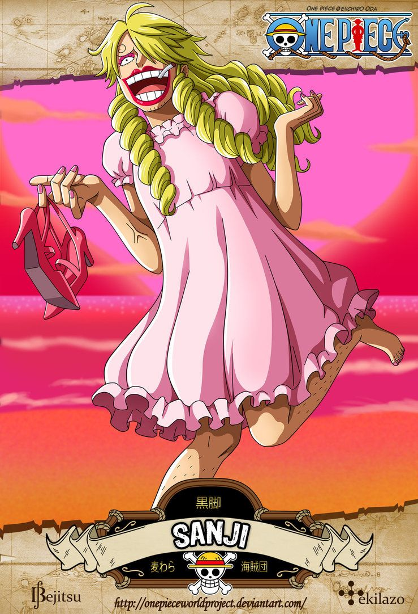

Biography
Trained in a floating restaurant and scarred by class politics, Sanji learned to manipulate heat and flavor into art. His past taught him to guard dignity and to feed the hungry cooking is his language of care. He fights with legs to keep his hands clean for cuisine, a discipline that turns into a beautiful martial artistry.
Role in the Story
Sanji binds the crew with feasts, charm, and an unshakable sense of chivalry. His fights defend the crew’s body as his food defends its spirit.
Contribution to Plot
Sanji’s skills salvage desperate situations: his culinary diplomacy and combat talents often open paths that brute force would not.
